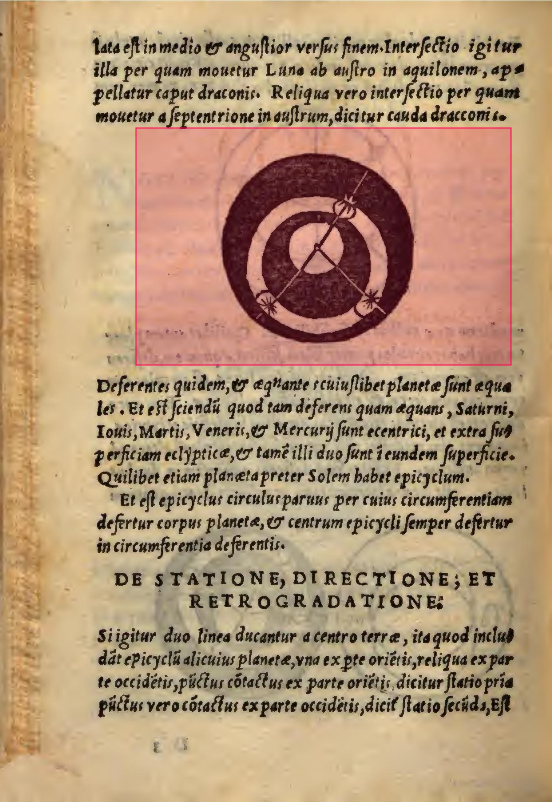
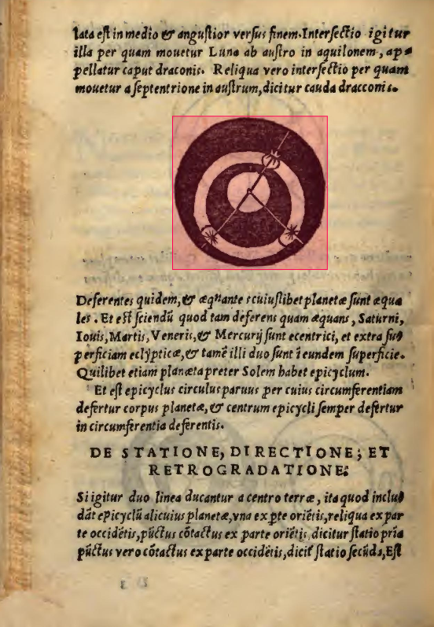
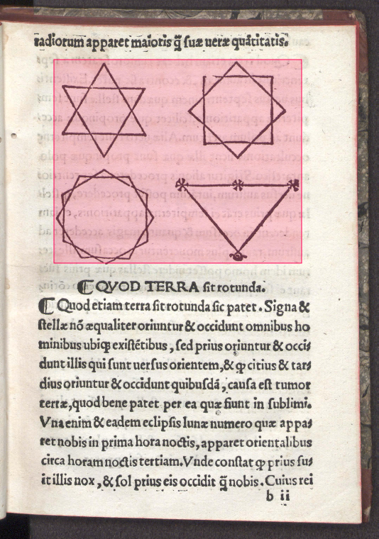
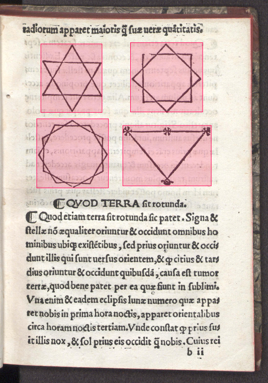
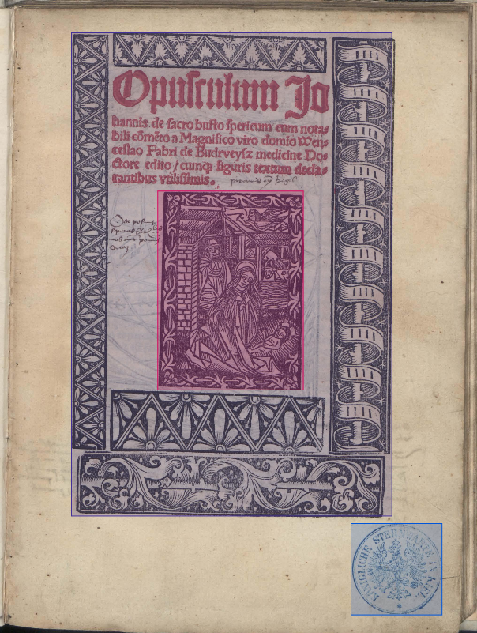
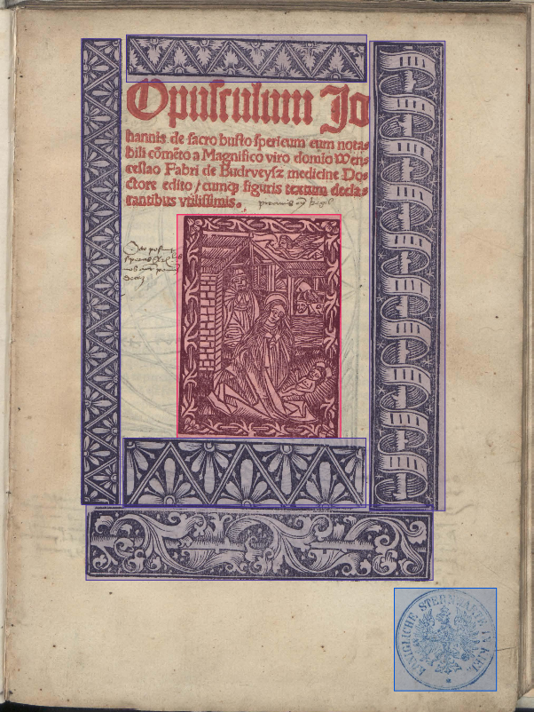
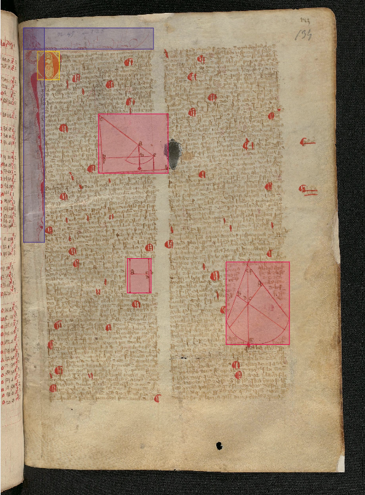
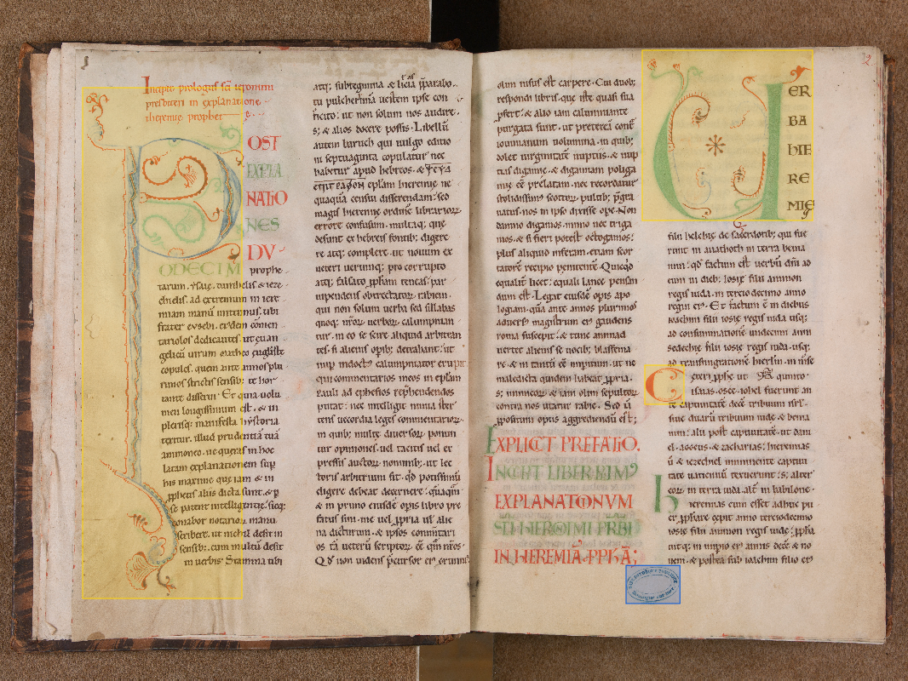
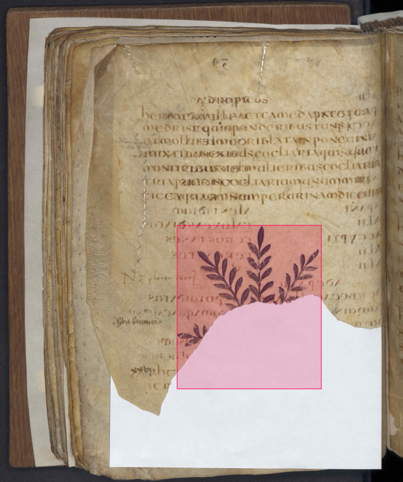
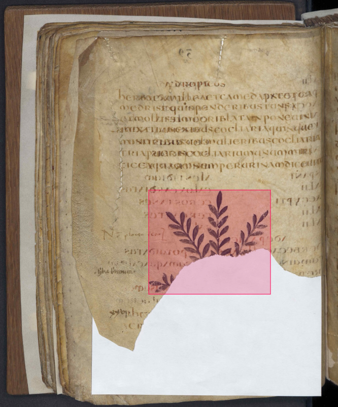

Here are some general rules of good practice for your work.
A precise annotation like the one shown in Figure 1b captures the entire visual element and is as close as possible to the boundaries, to reduce confusion for the machine learning model.

(a) Here, the annotation is too large.

(b) Here is the correct way to annotate an element: the borders are close to the end of the element without cutting it.
Figure 1. Hug the border of the object as tightly as possible.
Each distinct visual element must receive its own annotation (bounding box), even if several elements appear to form a coherent whole from the point of view of meaning or composition intended by the author of the document, as seen in Figure 2.
Two elements can be "linked" in the author's intention (for example, a human figure and a dog figure accompanying it, or related but non-touching ornamentation) without being visually connected, that is, without sharing a common background, frame, or direct contact. In this case, the annotations are separate.
If several elements share the same background or frame (for example, several symbols or drawings printed on a single continuous graphic strip), they can be grouped into a single annotation, because they are physically or visually unified on the medium, as seen in Figure 2 of the class definition.

(a) These elements, although clearly grouped together by the author, should not be annotated in this way.

(b) Here is how we want to annotate several elements.
Figure 2. Separate elements that are not visually linked.

(a) The annotation of the ornament overlaps too many elements.

(b) We decided to cut out the decorative elements to avoid overlapping.
Figure 3. Avoid item overlap between classes.
Do not annotate anything that is not on the main page, as shown in Figure 4a. If the scan was done for two pages, annotate it as shown in Figure 4b.

(a) Do not annotate the tables on the little bit of the other page.

(b) If the scan is done for two pages, then you must annotate the elements of both pages.
Figure 4. Annotate only the main page.
Label only the content that is actually present and legible in the document, as shown in Figure 5. Do not extend a bounding box or complete an area based on what you assume to be there (for example, a torn page, an erased stamp, text hidden by a fold).

(a) This annotation attempts to complete an element that is no longer visible.

(b) This annotation respects the limits of what is visible in the document.
Figure 5. Annotate what is visible, not what you infer.
The annotation task can be arduous and tedious; it is advisable to check the quality of the annotations before moving on to the next image, and to take regular breaks to stay alert and focused.